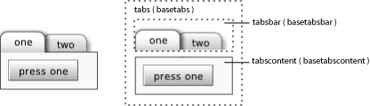

Base Component
View
A non-visual container for basetabpanes.
base/basetabs.xml
The basetabs component conceptually houses a
row of tabs that control the visibility of a stack of
basetabpanes. When a
basetabpane is added to the
basetab component, a corresponding
basetab is created for that
basetabpane.
Due to the non-visual nature of basetab, a
visible subclass of basetab is used in the next
example to demonstrate the correlation between
basetabpane and basetab
items.
<canvas width="150" height="75">
<include href="base"/>
<class name="aquatab" extends="basetab" width="40" height="20"
bgcolor="aqua">
<text>tab</text>
</class>
<basetabs x="10" y="10" tabclass="aquatab">
<basetabpane>
<text>one</text>
</basetabpane>
<basetabpane>
<text>two</text>
</basetabpane>
<basetabpane>
<text>three</text>
</basetabpane>
</basetabs>
</canvas>
As can be seen, three basetab items have
been created for the three basetabpanes
declared.
Though the basetabpane element is the
child of a basetab element, in the runtime view
hierarchy instances of basetabs are the
immediate parents of a basetabsbar (where
basetab components are placed and laid out) and
basetabscontent (where the
basetabpane components are placed and laid
out).
The following diagram illustrates the correlation between
basetabs, basetabsbar
(the container for basetab items), and
basetabscontent (the container for
basetabpanes).

You can change the look and feel of your basetabs by using a
different basetab,
basetabsbar, and/or
basetabscontent.
<canvas width="150" height="75">
<include href="base"/>
<class name="mytab" extends="basetab" width="40" height="20" bgcolor="lime">
<text>mytab</text>
</class>
<class name="mytabsbar" extends="basetabsbar" bgcolor="navy"
layout="class: simplelayout; axis: x; spacing: 5"/>
<class name="mytabscontent" extends="basetabscontent" bgcolor="silver"/>
<basetabs x="10" y="10" tabclass="mytab" barclass="mytabsbar"
contentclass="mytabscontent">
<basetabpane>
<text>one</text>
</basetabpane>
<basetabpane>
<text>two</text>
</basetabpane>
<basetabpane>
<text>three</text>
</basetabpane>
</basetabs>
</canvas>
basetab basetabsbar basetabpane basetabscontent